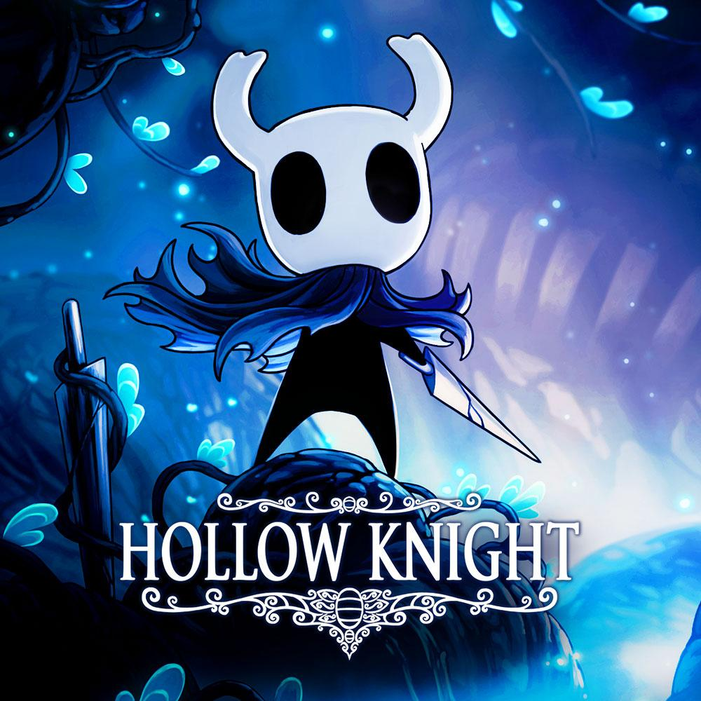
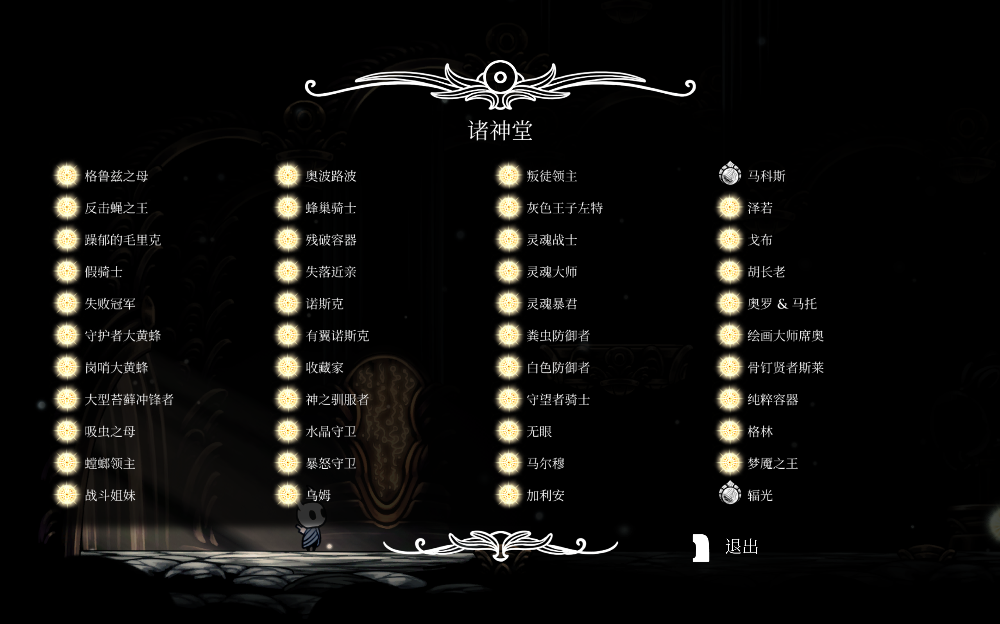
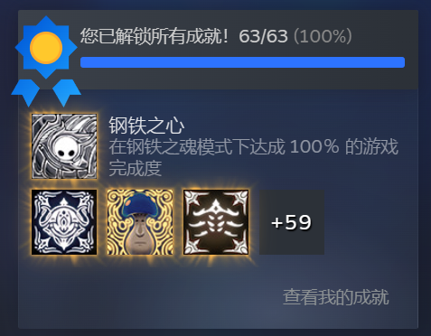

GAME 01
Hollow Knight
The game that got me hooked on a challenge.
I think Hollow Knight was the first truly challenging game I ever played.
I first tried it on someone else's PS5, and it took me two whole days just to beat one of the early bosses. But when I finally did, the feeling was incredible!
I'd never felt that proud of myself in a game before. After that, I downloaded Hollow Knight on my own PC, and it quickly became one of my favorite games.
🏆 My Hollow Knight Journey
My Achievements
I completed all the in-game achievements and earned the Steel Heart achievement on Steam! Definitely one of my proudest gaming moments!
Favorite Moments

